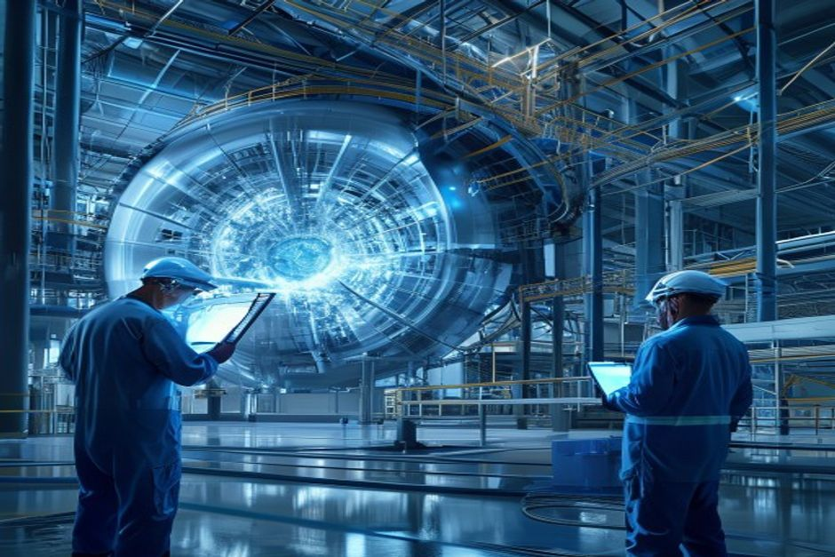
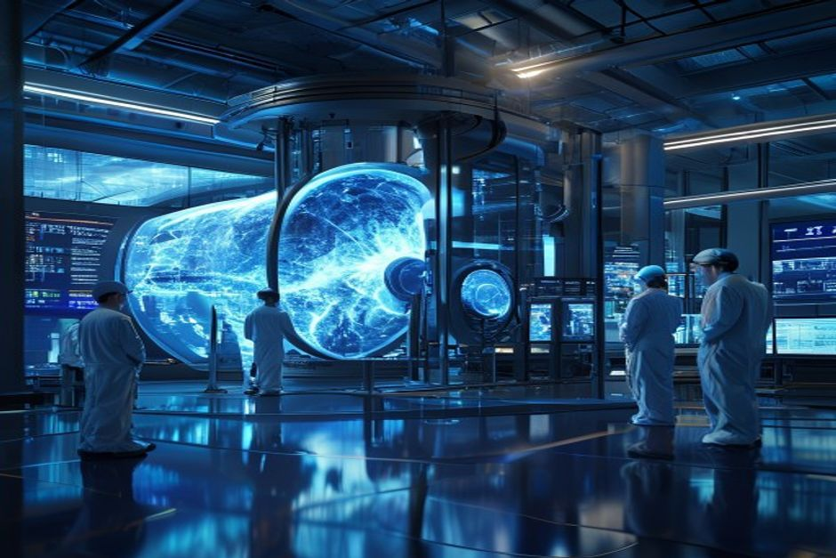
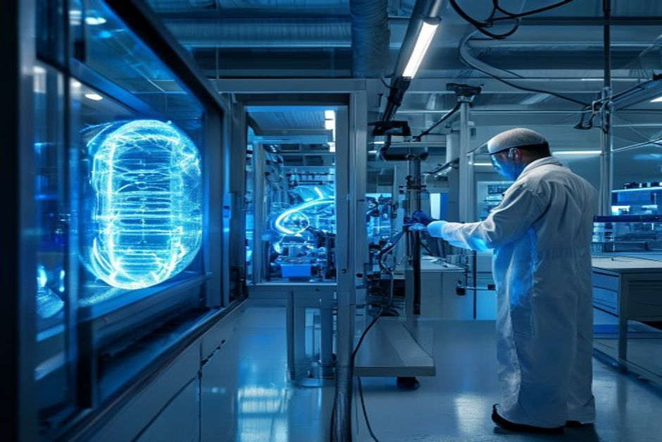

Nuclear fusion has long been hailed as the holy grail of clean energy—limitless, safe, and carbon-free. Recent breakthroughs, including the National Ignition Facility's net energy gain in 2022 and over $9 billion in private investment, have fueled optimism that commercial fusion is just a decade away. But a rigorous examination of project timelines, cost projections, and engineering hurdles reveals a more sobering picture. This report synthesizes public evidence from the U.S. Department of Energy, the Fusion Industry Association, and independent assessments to answer the central question: Should investors and strategists commit capital now, or wait for further de-risking?
Fusion's Commercial Timeline: 2035 Is Optimistic, 2040 More Realistic
Despite bold promises from private companies and government roadmaps, the historical pattern of delays in major fusion projects suggests that commercial electricity generation will not begin before 2035, and likely later.

The U.S. Department of Energy's Fusion Science & Technology Roadmap, released in 2024, aims to deliver commercial fusion power to the grid by the mid-2030s. However, this timeline is contingent on 'future public-private partnerships' and 'Congressional appropriations'—language that signals uncertainty. The roadmap itself acknowledges that DOE's ability to meet these milestones depends on funding that has not yet been secured.
ITER, the world's largest fusion experiment, provides a cautionary tale. Originally scheduled for first plasma in 2016, ITER's first plasma is now expected in 2025, with full power operations pushed to 2035—a delay of nearly two decades. The National Academies' 2021 report on a U.S. fusion pilot plant recommended a target of 2035-2040, calling it 'aggressive relative to recent construction of large fusion facilities.'
Private companies like Commonwealth Fusion Systems (CFS) aim for first plasma in 2026 with its SPARC tokamak, but even if successful, a commercial pilot plant would follow years later. CFS has not publicly committed to a grid-connected plant before the early 2030s. The DOE's Milestone-Based Fusion Development Program, which funds eight private companies, requires them to present pre-conceptual designs by late 2025—still far from a working reactor.
The fundamental physics challenge remains: no fusion experiment has sustained a net energy gain (Q>1) for more than a few seconds. The National Ignition Facility's 2022 ignition achieved Q≈1.5 but lasted only nanoseconds. JET's 2023 record of 5 seconds at Q≈0.67 is far from the continuous operation needed for a power plant. Sustained burning plasma—the next critical milestone—has not yet been demonstrated.
Counter-evidence: Some private companies claim faster timelines. Helion Energy, for example, has announced plans to deliver electricity to Microsoft by 2028. However, Helion has not published peer-reviewed results demonstrating its approach, and its timeline is widely viewed as aspirational. The burden of proof remains on the industry to show that decades of delays can be overcome.
- ITER first plasma delayed from 2016 to 2025; full power now expected in 2035 (ITER Organization)
- National Academies recommends U.S. pilot plant operation between 2035 and 2040, calling it 'aggressive' (National Academies)
- No fusion experiment has sustained Q>1 for more than 5 seconds; NIF's 2022 ignition lasted nanoseconds (LLNL, JET)
- DOE Milestone Program awardees must submit pre-conceptual designs by late 2025, with commercial plants years away (DOE)
The executive case should start with the few numbers the public record can support
Each headline metric is traceable to a retained public source sentence.
Evidence: E11, E1, E2. Sources: energy.gov.
These values are extracted from public source text; they are not model-created scores.
Sources
- E11 $9B - With more than $9 billion in private investment already advancing burning-plasma demonstrations and prototype reactor designs, DOE is coordinating a national effort to close the remaining technical gaps—spanning. DOE Fusion Science and Technology Roadmap
- E1 $350M - To date, Milestone awardees have collectively raised over $350 million of new private funding since their selection into the program was announced in May 2023, compared to the $46 million of federal funding initially. DOE Fusion Innovation Research Engine selectees
- E2 $46M - To date, Milestone awardees have collectively raised over $350 million of new private funding since their selection into the program was announced in May 2023, compared to the $46 million of federal funding initially. DOE Fusion Innovation Research Engine selectees
The Economics Don't Work Yet: Fusion LCOE Remains Above $100/MWh Through the 2030s
Even if fusion achieves technical success, its levelized cost of electricity (LCOE) is projected to be significantly higher than solar, wind, and natural gas for at least the next 15 years, making it uncompetitive without subsidies.
Lazard's 2024 Levelized Cost of Energy analysis shows solar PV at $24-38/MWh, onshore wind at $26-50/MWh, and gas combined cycle at $39-73/MWh. In contrast, nuclear fission—the closest existing technology—ranges from $141-221/MWh. Fusion's first-of-a-kind plants are expected to be even more expensive, with estimates from the Fusion Industry Association placing LCOE at $150-250/MWh in 2030, declining to $80-150/MWh by 2040.
Commonwealth Fusion Systems has stated a target of $50-100/MWh for its first commercial plants, but this assumes significant learning and scale that have not been achieved. The IEA's Net Zero Scenario projects fusion LCOE of $50-100/MWh by 2050, but only under optimistic assumptions about technology maturation and deployment rates.
The cost challenge is compounded by the capital intensity of fusion plants. A single 1 GW fusion plant is estimated to cost $5-10 billion, comparable to fission but with higher uncertainty. Private fusion companies have raised over $9 billion cumulatively, but this is a fraction of the estimated $100+ billion needed to build a global fusion industry.
Carbon pricing could improve fusion's competitiveness. At a carbon price of $100/tCO2, the effective cost of gas-fired electricity rises by ~$40/MWh, narrowing the gap. However, carbon prices remain below $50/tCO2 in most markets, and the trajectory is uncertain.
Counter-evidence: Some analysts argue that fusion's high capital costs could be offset by low fuel costs (deuterium and tritium are abundant) and high capacity factors (projected at 90%+). However, these advantages are theoretical until demonstrated. The first-of-a-kind premium is likely to persist for at least the first 5-10 plants.
- Lazard 2024 LCOE: Solar $24-38/MWh, Wind $26-50/MWh, Gas $39-73/MWh, Nuclear Fission $141-221/MWh (Lazard)
- Fusion LCOE estimates: $150-250/MWh in 2030, $80-150/MWh in 2040 (Fusion Industry Association)
- Commonwealth Fusion Systems target: $50-100/MWh for first commercial plants (CFS investor presentations)
- Cumulative private fusion investment exceeds $9 billion (DOE)
Funding endpoints imply the annual pace capital formation would need to sustain
The exhibit makes the implied annual funding pace visible instead of presenting two dated figures as a trend.
Evidence: E1, E3. Sources: energy.gov.
Only 2023 and 2027 are source-stated endpoints. Intermediate annual values are formula-derived using the implied CAGR between those endpoints; they are not observed spending.
Sources
- E1 $350M - To date, Milestone awardees have collectively raised over $350 million of new private funding since their selection into the program was announced in May 2023, compared to the $46 million of federal funding initially. DOE Fusion Innovation Research Engine selectees
- E3 $755.3M - Highlights of the FY 2027 Request The FES FY 2027 Request of $755.3 million is a decrease of $50.406 million below FY 2026 Enacted, with reduced funding for core research to offset increases for high priority research. DOE FY 2027 Fusion Energy Sciences budget request
Private Capital Is Flowing, but Public Funding Dominates and Budgets Are Under Pressure
While private investment in fusion has surged, public funding—primarily through ITER and DOE programs—still accounts for the majority of total spending, and recent budget requests show signs of strain.
According to the Fusion Industry Association, private fusion companies have raised over $7.1 billion cumulatively as of 2024, with $900 million added in the last year. The DOE reports that Milestone Program awardees alone have raised over $350 million in private funding since May 2023, compared to $46 million in federal commitments. However, public funding remains dominant: the DOE's Fusion Energy Sciences budget request for FY 2027 is $755.3 million, a decrease of $50.4 million from FY 2026 enacted levels.
ITER's annual budget is approximately $1.5 billion, shared among seven member nations. The U.S. contribution alone is over $300 million per year. Total government fusion funding globally exceeds $2 billion annually, but it is heavily concentrated in ITER, which consumes roughly 60% of public fusion R&D spending.
The DOE's FY 2027 budget request notes 'reduced funding for core research to offset increases for high priority research activities and facility operations.' This suggests that even as fusion gains political attention, budget constraints are forcing trade-offs. The Milestone Program is authorized for $415 million through FY 2027, but actual appropriations have been lower.
Private funding, while growing, is heavily reliant on venture capital. The Fusion Industry Association notes that less than 20% of private funding comes from non-dilutive sources (e.g., government grants, corporate partnerships). This creates a risk of funding gaps if VC appetite for deep-tech wanes.
Counter-evidence: The FIA's 2025 report highlights 'maturing investor confidence,' with over $2.5 billion in new investment in the last 12 months. However, this is still a small fraction of the capital deployed in renewables ($500+ billion annually). Fusion remains a niche within energy investing.
- Private fusion investment: $7.1 billion cumulative as of 2024 (FIA)
- Milestone Program: $350M private vs. $46M federal (DOE)
- DOE FES FY 2027 request: $755.3M, down $50.4M from FY 2026 (DOE)
- ITER annual budget: ~$1.5B, U.S. share >$300M (ITER Organization)
Funding signals show when public-private capital commitments become visible
Dated dollar figures show where commitment has moved from ambition into named programs or follow-on capital.
Evidence: E2, E1, E4, E8, E3. Sources: energy.gov.
Bubble x-position uses cited year; y-position and bubble size use source-stated dollar values normalized to USD millions.
Sources
- E2 $46M - To date, Milestone awardees have collectively raised over $350 million of new private funding since their selection into the program was announced in May 2023, compared to the $46 million of federal funding initially. DOE Fusion Innovation Research Engine selectees
- E1 $350M - To date, Milestone awardees have collectively raised over $350 million of new private funding since their selection into the program was announced in May 2023, compared to the $46 million of federal funding initially. DOE Fusion Innovation Research Engine selectees
- E4 $50.4M - Highlights of the FY 2027 Request The FES FY 2027 Request of $755.3 million is a decrease of $50.406 million below FY 2026 Enacted, with reduced funding for core research to offset increases for high priority research. DOE FY 2027 Fusion Energy Sciences budget request
- E8 $415M - The program is authorized for a total of $415 million through fiscal year 2027 in the CHIPS and Science Act of 2022. DOE Fusion Innovation Research Engine selectees
- E3 $755.3M - Highlights of the FY 2027 Request The FES FY 2027 Request of $755.3 million is a decrease of $50.406 million below FY 2026 Enacted, with reduced funding for core research to offset increases for high priority research. DOE FY 2027 Fusion Energy Sciences budget request
The Real Race Is in Sustained Net Energy: No Reactor Has Run Q>1 for More Than Seconds
The most critical technical milestone—sustained net energy gain over hours or days—remains unachieved. Current records are measured in seconds or nanoseconds, highlighting the vast gap between laboratory experiments and commercial reactors.

Fusion's fundamental challenge is confinement: maintaining plasma at 100 million °C long enough for fusion reactions to produce more energy than is input. Magnetic confinement devices like tokamaks have achieved pulse durations of up to 403 seconds (EAST, 2023) but with Q values below 1 (energy loss). Inertial confinement at NIF achieved Q>1 but for only nanoseconds.
The best combined performance comes from JET, which in 2023 sustained Q≈0.67 for 5 seconds—a record for magnetic fusion. No experiment has yet achieved Q>1 for more than a few seconds. For a commercial plant, sustained operation for hours or days is required, representing a factor of 1,000 to 10,000 improvement in duration.
The next major milestone is ITER, designed to achieve Q≥10 for pulses of 300-500 seconds. However, ITER's first plasma is not expected until 2025, and full-power operation is not until 2035. Even if ITER succeeds, it will not produce electricity; it is an experimental device. A demonstration power plant (DEMO) is not expected until the 2040s at the earliest.
Private companies like CFS (SPARC) aim to demonstrate Q>2 in the late 2020s, but SPARC is also an experimental device, not a power plant. The step from Q>2 to a commercial reactor requires solving materials, tritium breeding, and heat extraction challenges that have not been addressed at scale.
Counter-evidence: Some alternative approaches, such as Helion's field-reversed configuration, claim to skip the Q>1 step by directly converting fusion energy to electricity. However, Helion has not published experimental results demonstrating net energy gain, and its claims remain unverified.
- JET 2023: Q≈0.67 for 5 seconds (JET)
- NIF 2022: Q≈1.5 for nanoseconds (LLNL)
- EAST 2023: 403-second pulse at Q<1 (EAST)
- ITER design: Q≥10 for 300-500 seconds, first plasma 2025 (ITER)
The lab proof point is an energy bridge, not yet a power-plant economics case
The public milestone is a physics proof point; it still needs plant-level economics, repetition and systems integration.
Evidence: E10, E9. Sources: llnl.gov.
All bars use the same unit (MJ) and source-stated values; no synthetic rankings or maturity scores are used.
Sources
- E10 3.15 MJ - LLNL’s experiment surpassed the fusion threshold by delivering 2.05 megajoules (MJ) of energy to the target, resulting in 3.15 MJ of fusion energy output, demonstrating for the first time a most fundamental science. Lawrence Livermore fusion ignition
- E9 2.05 MJ - LLNL’s experiment surpassed the fusion threshold by delivering 2.05 megajoules (MJ) of energy to the target, resulting in 3.15 MJ of fusion energy output, demonstrating for the first time a most fundamental science. Lawrence Livermore fusion ignition
Strategic Implications: Invest in Enabling Technologies, Not Pure Fusion Plays
Given the long timeline and high uncertainty, the most prudent strategy is to invest in the technologies that will enable fusion—such as high-temperature superconductors, tritium breeding systems, and advanced materials—rather than in fusion developers.

High-temperature superconductors (HTS) are a critical enabling technology for compact tokamaks like SPARC. The global HTS market is projected to grow from $1.5 billion in 2023 to $5 billion by 2030, driven by fusion, medical imaging, and grid applications. Investing in HTS manufacturers provides exposure to fusion upside with lower technology risk.
Tritium breeding is another bottleneck. Fusion reactors require tritium, which is scarce and must be bred from lithium in the reactor blanket. The DOE is initiating design of an Integrated Blanket and Fuel Cycle Test Facility (IB-FCTF) to close this gap. Companies developing lithium blanket technologies or tritium extraction methods could benefit regardless of which fusion design wins.
Advanced materials—such as radiation-resistant steels and plasma-facing components—are needed for all fusion concepts. The DOE's Fusion Energy Sciences program has identified structural materials and plasma-facing components as core challenge areas. Materials suppliers with fusion-relevant portfolios could see demand growth as the industry matures.
For corporate strategists, the implication is to build optionality rather than make large bets. Partnering with fusion startups through joint development agreements or licensing deals can provide early access without full capital commitment. Utilities should monitor fusion progress but focus near-term investments on renewables, storage, and fission.
Counter-evidence: Some argue that investing in enabling technologies is too indirect and that the real value will accrue to fusion developers that achieve first-mover advantage. However, the history of energy technology shows that the first mover often fails (e.g., Solyndra in solar), while suppliers of key components capture steady value.
- DOE initiating IB-FCTF design for blanket and fuel cycle (DOE FY 2027 budget)
- HTS market projected to grow to $5B by 2030 (industry reports)
- DOE identifies structural materials and plasma-facing components as core challenge areas (DOE)
Capital commitments are visible, but still concentrated in a few public signals
The visible dollar figures cluster around government programs, private follow-on capital and public budget requests.
Evidence: E11, E3, E16, E8, E1, E21. Sources: energy.gov; llnl.gov.
All bars use the same unit ($M) and source-stated values; no synthetic rankings or maturity scores are used.
Sources
- E11 $9.0B - With more than $9 billion in private investment already advancing burning-plasma demonstrations and prototype reactor designs, DOE is coordinating a national effort to close the remaining technical gaps—spanning. DOE Fusion Science and Technology Roadmap
- E3 $755.3M - Highlights of the FY 2027 Request The FES FY 2027 Request of $755.3 million is a decrease of $50.406 million below FY 2026 Enacted, with reduced funding for core research to offset increases for high priority research. DOE FY 2027 Fusion Energy Sciences budget request
- E16 $624M - That’s why I’m also proud to announce today that I’ve helped to secure the highest-ever authorization of over $624 million this year in the National Defense Authorization Act for the ICF program to build on this. Lawrence Livermore fusion ignition
- E8 $415M - The program is authorized for a total of $415 million through fiscal year 2027 in the CHIPS and Science Act of 2022. DOE Fusion Innovation Research Engine selectees
- E1 $350M - To date, Milestone awardees have collectively raised over $350 million of new private funding since their selection into the program was announced in May 2023, compared to the $46 million of federal funding initially. DOE Fusion Innovation Research Engine selectees
- E21 $180M - Total anticipated funding for FIRE collaboratives is $180 million for projects lasting up to four years in duration. DOE Fusion Innovation Research Engine selectees
Read after Exhibit 5, Exhibit 6 shifts the lens from capital signals to dated milestones, showing whether the public evidence is forming a credible commitment clock.
Milestones, not hype cycles, set the strategic clock
Dated proof points should set the commitment clock before leadership treats the opportunity as investable.
Evidence: E27, E18, E36, E24, E1, E5. Sources: nationalacademies.org; energy.gov; llnl.gov.
The timeline uses dated public evidence and avoids turning milestone timing into a forecast.
Sources
- E27 2019 - This is a follow-on activity to the 2019 National Academies report, the Final Report of the Committee on a Strategic Plan for U.S. National Academies: Bringing Fusion to the U.S. Grid
- E18 2020 - It’s six Core Challenge Areas are strongly aligned to the 2020 Fusion Energy Sciences Advisory Committee (FESAC) Long-Range Plan (LRP): structural materials, plasma-facing components and plasma-material interactions. DOE FY 2027 Fusion Energy Sciences budget request
- E36 2021 - This latest achievement is particularly remarkable because NIF used a less spherically symmetrical target than in the August 2021 experiment,” said U.S. Lawrence Livermore fusion ignition
- E24 2022 - The program was announced in September 2022 and, following a rigorous merit-review process, 8 selectees were announced in May 2023. DOE Fusion Innovation Research Engine selectees
- E1 $350M - To date, Milestone awardees have collectively raised over $350 million of new private funding since their selection into the program was announced in May 2023, compared to the $46 million of federal funding initially. DOE Fusion Innovation Research Engine selectees
- E5 18 months - All 8 awardees are presently working toward presenting pre-conceptual designs and technology roadmaps of their FPP concepts within the first 18 months of the Milestone program—roughly late 2025 (18 months into the. DOE Fusion Innovation Research Engine selectees